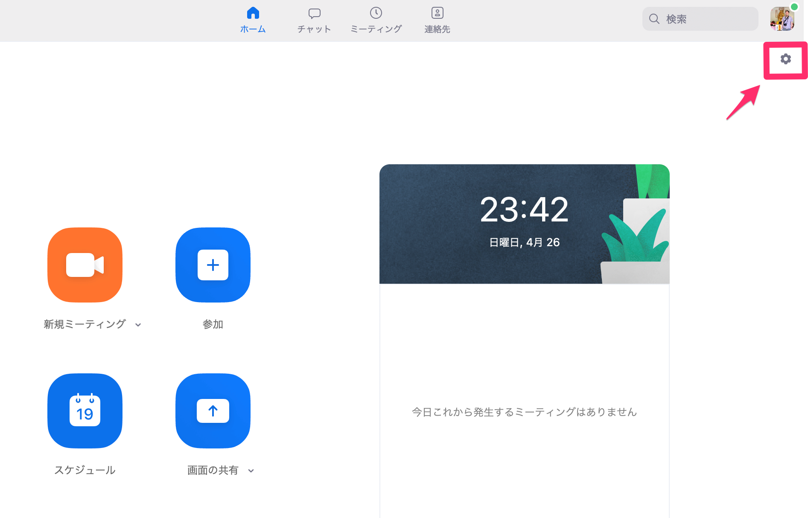
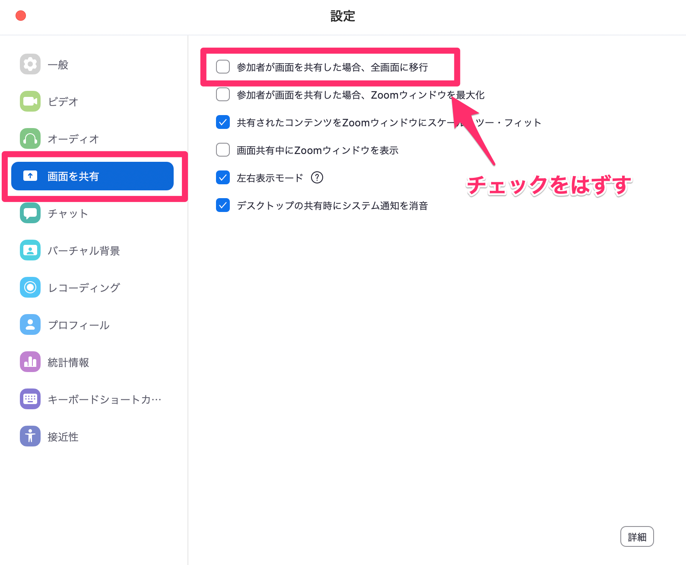

1. 授業について
1-1. 科目のねらい
Web制作に関わる職業にとって、HTMLとCSSの技術・知識は必須である。また、Webエンジニアとして制作に関わるには、正しい利用方法、知識が必要になってくる。比較的曖昧な書き方でも表示されてしまう言語のため、基礎から正しく学ぶことが後々の作品制作にとって重要である。
1-2. 授業概要
まずは1ページのWebサイトを、適切な方法で正確にマークアップすることができる知識を、多くの課題をこなすことで修得する。毎週のタイピングテストや定期的な振り返りを行い、全員が一定のレベルに達するよう進めていく。
1-3. 到達目標
- 授業についていけるタイピングスピードをつける
- Webサイトのしくみを理解する
- HTMLとCSSの基礎知識を理解し、シングルページの構築ができる
- サイト制作に必要な「Adobe XD」の操作方法を身につける
1-4. 授業で行うこと
- 授業資料（このサイト）を利用して、概要や使用方法などを講義
- 毎週出される課題に各自取り組む
- 毎週、その週の最初のコマにタイピングスピードのテストを行う
- 段階ごとに振り返りシートを用いて習得チェック
1-5. 評価の観点
- 出席率
- 授業態度
- タイピングスピードの伸び率
- 毎回の課題の完成度
1-6. 事前準備
- 【画面共有時の全画面解除（Zoom）】
-
- Zoomクライアントのプロフィール写真下にある「歯車アイコン」をクリック 
- 左側メニュー「画面を共有」を選択
- 「参加者が画面を共有した場合、全画面に移行」のチェックをはずす 
- 【アプリケーションの切り替え】
- Zoom、ブラウザ、エディタ、そのうちAdobeのソフトと、多くのアプリケーションを行ったり来たりします。アプリケーションを切り替えるショートカットを早めに覚えておきましょう。
- Windowsの場合は「Alt + Tab」、Macの場合は「command + Tab」